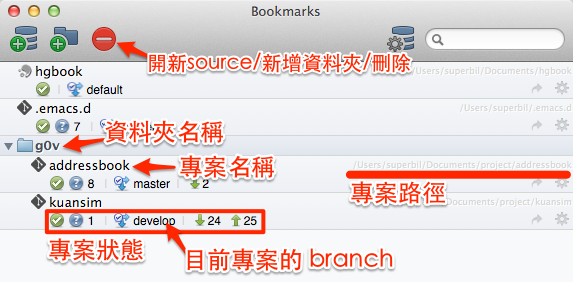
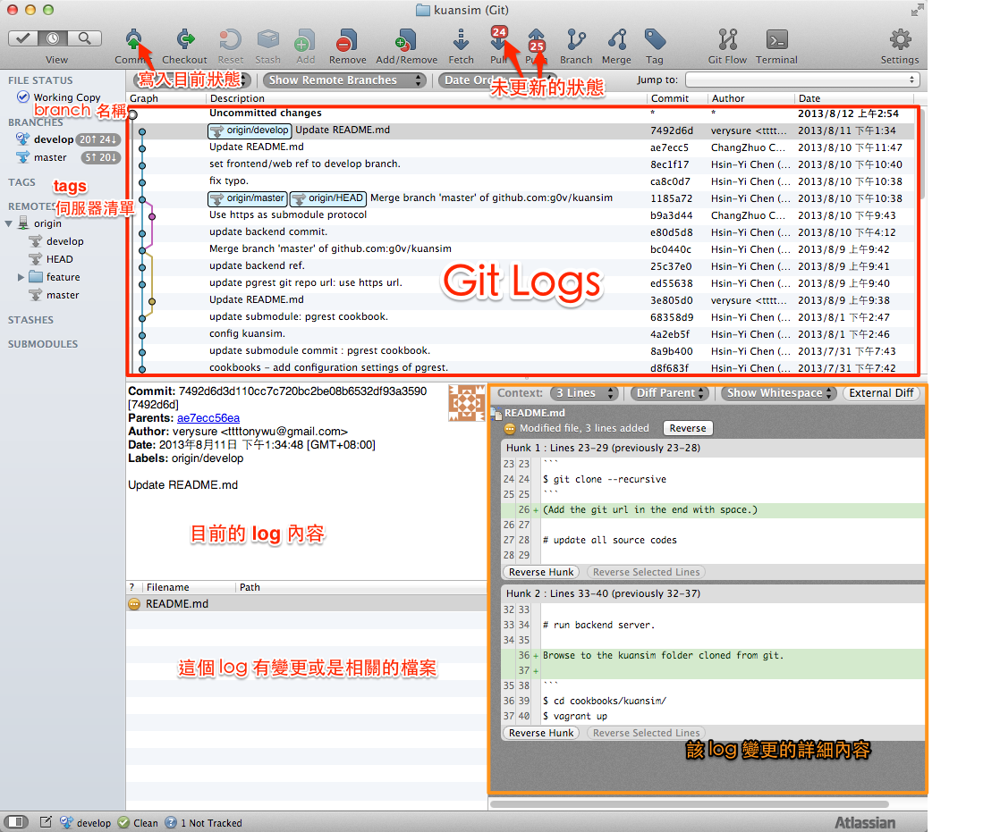
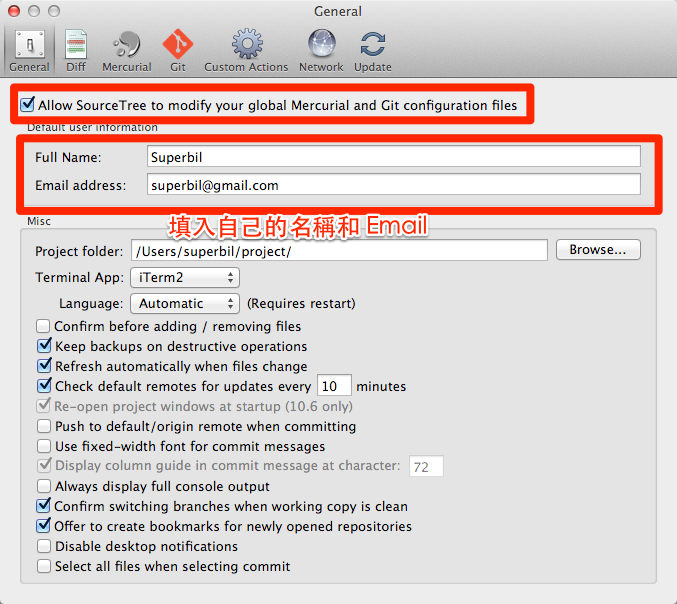
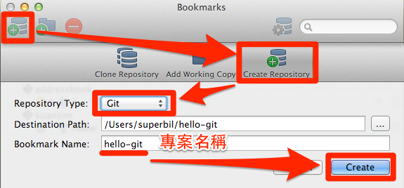
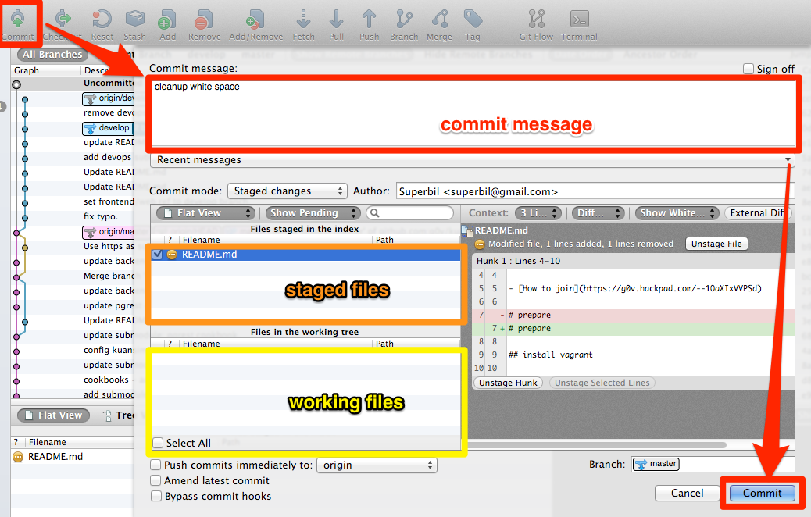
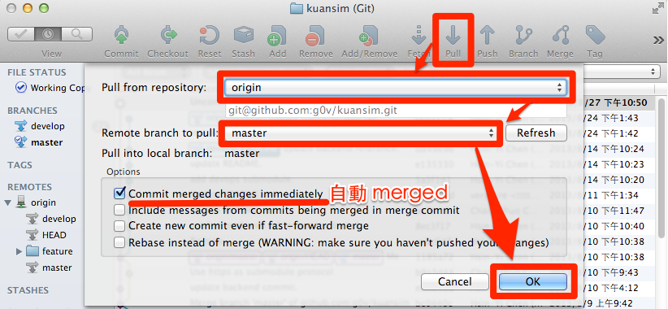
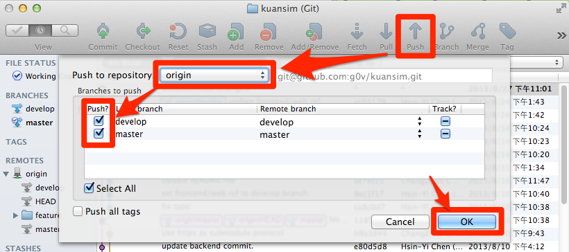

Source Tree 簡介
Table of Contents
1 什麼是 Source Tree ?
1.1 下載
- Windows Version (Windows 7+) <1.0.8>
- Mac version <1.6.2.2>
- AppStore (10.7.8+)
1.2 SourceTree 介面簡介
- Bookmarks 介面

- 主要介面

1.3 git 指令/狀態圖

- working dictionary 目前 git 正在工作的目錄
- staging area 準備要 commit 的東西
- local repo 本地端的 git 資料庫
- remote repo 遠端的 git 資料庫
2 SourceTrees 超簡單使用
2.1 設定 git 使用的 Email
設定全域的使用者資訊

- Command line 指令
git config --global user.name "username" git config --global user.email "username@yooo.com"
2.2 開始新的 git 專案
最後面代入要產生的目標，若目標不存在會建立一個新的資料夾

- Command line 指令
git init hello-git > Initialized empty Git repository in ~/hello-git/.git/
2.3 開始舊專案開發
抓下個一個叫作 example 的專案，並且取名為 example
- Command line 指令
git clone "http://github.com/user/example.git" example
2.4 把目前修改的東西記錄下來
把目前有記錄到的檔案，加上一個新的 commit，內容是 "Init commit"

- Command line 指令
git commit --all -m "Init commit"
2.5 抓取最新的程式碼 (Pull)
選擇 Pull 後，再選擇要 Pull 的 branch
可以選擇自動 merged，就會把 local 的部份和 remote 做 merge

- Command line 指令
git pull
2.6 上傳變更的部份 (Push)
選擇 Push, 再選擇要 push 的 repository(remote)，下面可以選擇需要 push 的 branch

- Command line 指令
git push origin